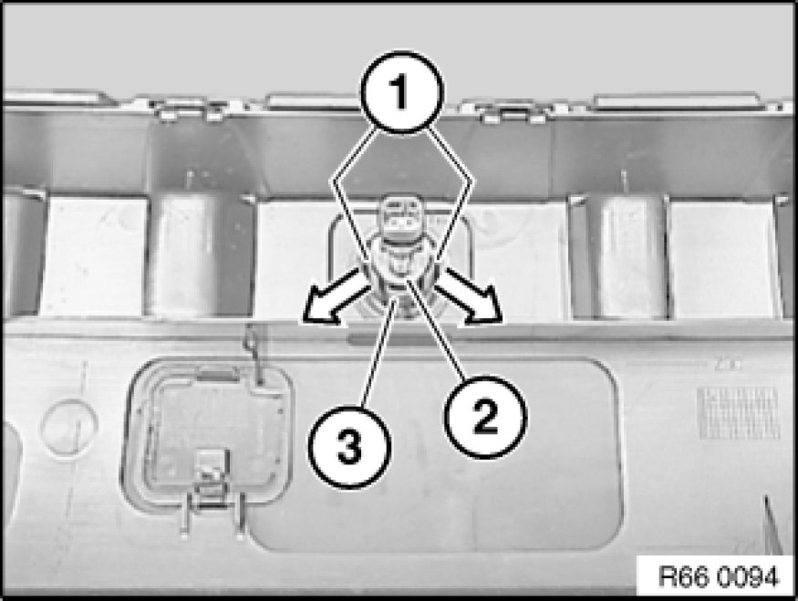
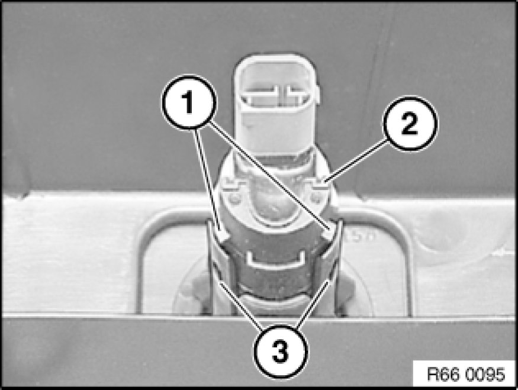

Removing and Installing/Replacing a Rear Ultrasonic Transducer (Park Distance Control)
66 20 540 - Removing and installing/replacing a rear ultrasonic transducer (Park Distance Control)
Necessary preliminary tasks:
- Remove rear bumper trim.

Unlock catches (1) in direction of arrow and pull ultrasonic transducer (2) out of bracket (3).

Installation:
Retaining hooks (1) of ultrasonic transducer (2) must engage exactly in mountings (3).